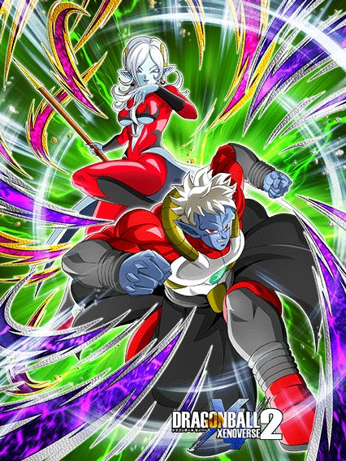

DATA DE LANÇAMENTO: 23/04/2026
50% de redução de dano e um sonho.
Esses 2 precisam de um time "Crossover" ou "Time Travelers " pra ter +500% de ATK e DEF, 50% de chance de crítico e 50% de chance de desvio
Tirando isso, a única outra mecânica que eles tem é stackar 20% de ATK e DEF no SA 😭
Por algum motivo eles também dão 5% de DEF pra Extreme Class por 2 turnos, algo que não faz sentido nenhum e basicamente nem faz diferença 😭
Enfim, se eles estiverem nos slots 2 ou 3 eles lançam mais adicionais, mas o fato de eles stackarem lento e mal terem um time usável é bem.. problemático.
Nota dos Links:
05/10
Nota das Categorias:
04/10
Você chegou ao fim dessa página!
Obrigado por ler tudo, e fica a vontade pra ver outras